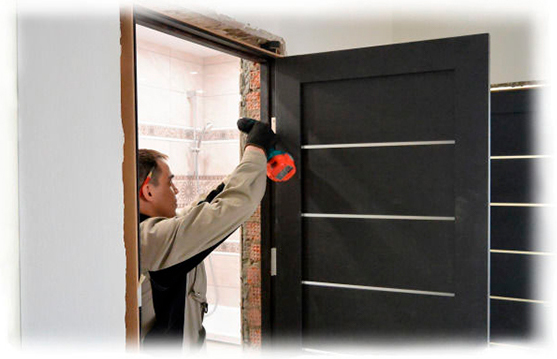

Правильная профессиональная установка межкомнатных дверей играет ключевую роль в удобстве их использования и существенно продлевает срок службы. Поэтому не стоит снисходительно относиться и доверять ее неопытным специалистам. С дугой стороны, если обратиться к опытному мастеру, то цена может быть довольно высокой.
Чтобы сэкономить и обеспечить гарантированно качественный монтаж дверей необходимо обращаться в профессиональную компанию. Так, на нашем сайте вы можете не только найти контактную информацию и оставить заявку на установку, но и ознакомиться с прайс-листом на предоставляемые услуги.
Заказав установку дверей у нас, клиент всегда может рассчитывать на профессиональную качественную работу, а не переплачивать за эту услугу сомнительным специалистам, которые не могут гарантировать правильный монтаж межкомнатной двери.
| № | Основные работы | Цена |
|---|---|---|
| 1 | Установка стандартной двери | 2 000 ₽ |
| 2 | Установка эмалированной двери | 2 400 ₽ |
| 3 | Установка шпонированой двери | 2 400 ₽ |
| 4 | Установка дверей из массива (дуб, ольха) | 2 600 ₽ |
| 5 | Установка глянцевых дверей | 2 600 ₽ |
| 6 | Установка дверей PROFILDOORS, Оникс | 2 800 ₽ |
| 7 | Установка стандартной двустворчатой двери | 3 800 ₽ |
| 8 | Установка двустворчатой двери (эмаль, шпон) | 4 800 ₽ |
| 9 | Установка складной двери | 4 000 ₽ |
| 10 | Установка скрытой двери | 4 000 ₽ |
| 11 | Установка Рото-двери | 5 000 ₽ |
| 12 | Установка раздвижной одностворчатой (без обрамления) | 2 500 ₽ |
| 13 | Установка раздвижной двустворчатой (без обрамления) | 5 000 ₽ |
| 14 | Установка стеклянной двери | 3 500 ₽ |
| 15 | Установка двери система “COMPACK” | 5 000 ₽ |
| 16 | Расходный материал (пена, саморезы, клей) | 200 ₽ |
| № | Основные работы | Цена |
|---|---|---|
| 1 | Демонтаж старой двери (обычной) | 250 ₽ |
| 2 | Демонтаж старой двери (сложной) | 500 ₽ |
| 3 | Установка доборов до 150 мм | 800 ₽ |
| 4 | Установка доборов свыше 150 мм | 1 000 ₽ |
| 5 | Установка доборов свыше 200 мм | 1 200 ₽ |
| 6 | Установка портала до 200 мм | 2 000 ₽ |
| 7 | Установка портала свыше 200 мм | 3 000 ₽ |
| 8 | Обрамление входной двери | 2 300 ₽ |
| 9 | Врезка замка (сантехнический, магнитный, под цилиндр) | 500 ₽ |
| 10 | Коррекция дверной коробки (паз под добор) 1 комплект | 500 ₽ |
| 11 | Коррекция полотна по высоте 1 сторона | 800 ₽ |
| 12 | Коррекция дверей (эмаль, глянец , массив) | 1000 ₽ |
| 13 | Коррекция наличника вдоль | 200 ₽ |
| 14 | Коррекция наличника телескоп | 300 ₽ |
| 15 | Установка арки , сборного портала | 4 000 ₽ |
| 16 | Установка фрамуги | 1 800 ₽ |
| 17 | Установка плинтуса МДФ, деревянного , 1 погонный метр | 300 ₽ |
| 18 | Установка порога металлического | 300 ₽ |
| 19 | Установка порога деревянного | 300 ₽ |
| 20 | Установка дверей не стандартных свыше 200 см | +30% |
| 21 | Расширение проема, 1 сторона (пеноблок, штук) за 1 метр | 500 ₽ |
| 22 | Расширение проема (кирпич , бетон) за 1 метр | 500 ₽ |
| 23 | Сужение проема брусом, за 1 сторону | 400 ₽ |
| 24 | Подпил плинтуса под наличник | 100 ₽ |
| 25 | Врезка ригеля / доп. петли | 200 ₽ |
| 26 | Врезка скрытой петли | 500 ₽ |
| 27 | Установка скрытого порога | 1 500 ₽ |
| 28 | Установка дверного ограничителя | 200 ₽ |
| 29 | Установка доводчика | 1 00 ₽ |
| 30 | Ложный выезд мастера | 1 00 ₽ |
| 31 | Выезд мастеров за МКАД | 35 ₽ / км |
| № | Работы с входными дверями | Цена |
|---|---|---|
| 1 | Установка металлической двери до 100 кг | 3 500 ₽ |
| 2 | Установка металлической двери до 140 кг | 4 000 ₽ |
| 3 | Демонтаж деревянной входной двери | 500 ₽ |
| 4 | Демонтаж железной входной двери | 1 000 ₽ |
| 5 | Закладка пеноблоком (верх до 20 см) с нашим материалом | 2 000 ₽ |
| 6 | Закладка пеноблоком (верх свыше 20 см) с нашим материалом | 3 000 ₽ |
| 7 | Расширение проема (бетон, монолит) 1 погонный метр | 1 000 ₽ |
| 8 | Сужение проема брусом | 500 ₽ |
| 9 | Установка доборов и пыльников | 2 300 ₽ |
| 10 | Замена панели | 3 000 ₽ |
Для выполнения быстрого и качественного монтажа входных и межкомнатных дверей место для их установки должно быть правильно подготовлено. Первое, что нужно сделать – это вывести стены, в плоскости которых будет выполнен монтаж, под уровень «0», окрасить или оклеить обоями. При этом установка напольного покрытия, равно, как и прочие отделочные работы в помещении, должны быть полностью завершены. Размер дверного проема должен полностью соответствовать габаритам выбранных для установки дверей.

Ответственность мастера, выполняющего установку двери, не распространяется на
осыпание штукатурки, вследствие проведения необходимых монтажных и демонтажных работ, повреждение проводки,
плинтусов и элементов напольного покрытия, а также на неплотное прилегание наличника к стене в результате
отсутствия подготовки дверного проема
или неправильного его выполнения. Мастер не будет нести
ответственность, если все вышеперечисленное произошло по причине
естественного старения материалов, а также нарушения порядка
проведения строительно-монтажных и отделочных работ.
Кроме того:
Цена на установку дверей зависит от многих факторов, однако, у нас оно всегда доступна, а любое повышение стоимости аргументировано и связано со сложностью или сжатыми сроками монтажа. Например, если дверь имеет стандартную конструкцию, а установка не требует дополнительных материалов и работ, то стоимость остается на минимальной отметке.
Дополнительные работы, связанные с врезкой замков в межкомнатные двери и другими задачами, немного увеличивают общую цену, но, в любом случае, она остается гораздо ниже, чем у конкурентов. Связавшись с нами, вы можете заказать установку на удобную для вас дату и время, также мы осуществляем оперативный монтаж дверей по всему городу.
Наши опытные специалисты быстро и качественно справятся с любой задачей, а вы сможете существенно сэкономить и без лишних хлопот установить межкомнатные двери в своем доме, квартире или офисе.
Любая межкомнатная дверь требует правильной установки. Только в этом случае, она прослужит вам долгий срок, полноценно выполняя все свои функции. Современные двери межкомнатные состоят из трёх основных конструкционных элементов:
Для навешивания полотен используются специальные дверные петли. Дверные наличники выполняют декоративную функцию. Они облагораживают проем и придают вновь установленной двери законченный вид.
Монтаж дверей начинается со сборки коробки, то есть своей несущей основы и оснащения ее всей необходимой фурнитурой – петлями, ручками, защелкивающимся механизмом. Далее установка дверей будет осуществляться так:
Монтаж дверей начинается со сборки коробки, то есть своей несущей основы и оснащения ее всей необходимой фурнитурой – петлями, ручками, защелкивающимся механизмом. Далее установка дверей будет осуществляться так:
На этом процесс считается завершенным. Если все сделано правильно, она будет плавно открываться и закрываться, не издавая постороннего шума.
Если двери межкомнатные вы решили установить самостоятельно, вам обязательно пригодятся наши советы. В это сложно поверить, но для успешной установки дверного полотна его нужно правильно выбрать. Размер покупаемой межкомнатной двери должен четко соответствовать размеру дверного проема, поскольку слишком большое полотно потребует его увеличения, а слишком маленькое – сужению, что влечет за собой дополнительные финансовые расходы.
Кроме того, нужно проследить за тем, чтобы наличник полностью закрывал откосы дверного проема. В противном случае вновь установленная дверь не будет иметь эстетичный внешний вид, поскольку обнаружатся мелкие дефекты, которые необходимо будет устранять. Поэтому при выборе межкомнатной двери нужно учесть следующие параметры:
Кроме того, нужно проследить за тем, чтобы наличник полностью закрывал откосы дверного проема. В противном случае вновь установленная дверь не будет иметь эстетичный внешний вид, поскольку обнаружатся мелкие дефекты, которые необходимо будет устранять. Поэтому при выборе межкомнатной двери нужно учесть следующие параметры: